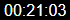
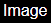

Dokumentation SqueezeboxRPC Widgets
Player Knopfleiste

Über dieses Widget können alle Player, die in deimem Logitech Media Server eingebunden sind ausgewählt werden.
Nach Auswahl einer squeezerpc.? Instanz, werden die verfügbaren Player im Widget angezeigt.
Attribute
SqueezeboxRPC Instanz - Gruppe Allgemein
Auswahl einer Instanz des squeezeboxrpc-Adapters. Nur diese werden hier als gültig anerkannt.
Widgetformat - Gruppe Allgemein
Hier kann der widgettyp ausgewählt werden. Der Typ "formatbutton" hat den kompletten Funktionsumfang und arbeitet auch mit dem SyncGroup Widget zusammen.
Der Typ "formatselect" ist ein einfache Auswahlbox. Als Bezeichnung wird der Playername oder, falls eingegeben, ein individueller Text verwendet.
Anzeigeindex - Gruppe Allgemein
Darüber können einzelne Knöpfe ausgeblendet oder in einer anderen Reihenfolge angezeigt werden.
indem der Index des Knopfes herausgelöscht wird. Für das ausblenden einfach die jeweilige Indexposition inklusive Komma herauslöschen.
Für eine andere Position, wird die Indexnummer an einer anderen Position im Viewindex eingefügt.
Falls bei dem editieren dieses Feldes entwas schief gegangen ist, dann kann der Ursprung durch das leeren des gesamten Feldes
wieder hergestellt werden.
Für jeden Eintrag wird ein separates Untermenü erstellt, in dem ein eigenes Bild oder ein Text angegeben werden kann.
Zur Erleichterung werden die Indexzahlen an dem jeweiligen Knopf im Edit-Modus angezeigt, wenn die Edit-Mode-Hilfe aktiviert ist.
Umbruch bei CamelCase - Gruppe Allgemein
Falls der Playername in CamelCase notiert ist, kann darüber ein Zeilenumbruch aktiviert werden, so dass der Playername größer auf dem Knopf angezeigt wird.
Edit-Mode-Hilfe - Gruppe Allgemein
Wenn diese Hilfe aktiviert ist, werden Indexzahlen an dem jeweiligen Knopf angezeigt und Eisntellung zur "Durchsichtigkeit" bei den Knopfeinstellungen besitzt keine Wirkung.
Bildbreite - Knopfeinstellungen
Bildbreite eines Knopfes
Bildhöhe - Knopfeinstellungen
Bildhöhe eines Knopfes
Durchsichtigkeit - Knopfeinstellungen
Wenn der Knopf nicht aktiviert ist, wird er gegen den Hintergrund ausgeblendet. 0= Unsichtbar, 1=Voll sichtbar
Rahmenbreite - Knopfeinstellungen
Rahmenbreite/Randbreite in Pixel um den Knopf
Randdarstellung - Knopfeinstellungen
Art der Randdarstellung bspw durchgezogen, gestrichelt.
Randfarbe normal - Knopfeinstellungen
Wenn der Knopf nicht aktiviert ist, wird dies durch diese Farbe dargestellt.
Randfarbe aktiv - Knopfeinstellungen
Wenn der Knopf aktiviert ist, wird dies durch diese Farbe dargestellt.
border-radius - Knopfeinstellungen
Für gebogene Randeckecn, kann hier ein Radius in Pixel eingegeben werden
Hintergrundfarbe - Knopfeinstellungen
Hintergrundfarbe bei Text
Bild - Knopf[x]
Hier kann individuell ein Bild definiert werden. Das Bild hat vorrang vor dem Text.
Text - Knopf[x]
Hier kann individuell ein Text definiert werden. Das Bild hat vorrang vor dem Text.
Favoriten Knopfleiste

Über dieses Widget können alle Favoriten, die in deimem Logitech Media Server angelegt worden sind ausgewählt werden.
Nach Auswahl des Player widgets werden die verfügbaren Favoriten im widget angezeigt.
Idealerweiße hast du in deiner Favoritendatei des Logitech Media Servers eine Grafik mit angegeben (manuelle Nacharbeit der Datei auf dem LMS-server notwendig).
Falls nicht, dann wird der einzelne Knopf einmal nach der FavoritenID benannt (kann im Adapter nachgeschaut werden),
sowie einem Index, der bei 0 beginnt und hochgezählt wird.
Zur Vorbereitung musst du das Favoriten widget mit dem Player widget verbinden. Wenn du dann einen Player im Player widget ausgewählt hast,
wird nach Anwahl eines Favoriten dieser auf dem jeweiligen Player abgespielt.
Attribute
Player widget - Gruppe Allgemein
Auswahl des Player widgets.
Anzeigeindex - Gruppe Allgemein
Darüber können einzelne Knöpfe ausgeblendet oder in einer anderen Reihenfolge angezeigt werden.
indem der Index des Knopfes herausgelöscht wird. Für das ausblenden einfach die jeweilige Indexposition inklusive Komma herauslöschen.
Für eine andere Position, wird die Indexnummer an einer anderen Position im Viewindex eingefügt.
Falls bei dem editieren dieses Feldes entwas schief gegangen ist, dann kann der Ursprung durch das leeren des gesamten Feldes
wieder hergestellt werden.
Für jeden Eintrag wird ein separates Untermenü erstellt, in dem ein eigenes Bild oder ein Text angegeben werden kann.
Zur Erleichterung werden die Indexzahlen an dem jeweiligen Knopf im Edit-Modus angezeigt, wenn die Edit-Mode-Hilfe aktiviert ist.
Edit-Mode-Hilfe - Gruppe Allgemein
Wenn diese Hilfe aktiviert ist, werden Indexzahlen an dem jeweiligen Knopf angezeigt und Eisntellung zur "Durchsichtigkeit" bei den Knopfeinstellungen besitzt keine Wirkung.
Bildbreite - Knopfeinstellungen
Bildbreite eines Knopfes
Bildhöhe - Knopfeinstellungen
Bildhöhe eines Knopfes
Durchsichtigkeit - Knopfeinstellungen
Wenn der Knopf nicht aktiviert ist, wird er gegen den Hintergrund ausgeblendet. 0= Unsichtbar, 1=Voll sichtbar
Rahmenbreite - Knopfeinstellungen
Rahmenbreite/Randbreite in Pixel um den Knopf
Randdarstellung - Knopfeinstellungen
Art der Randdarstellung bspw durchgezogen, gestrichelt.
Randfarbe normal - Knopfeinstellungen
Wenn der Knopf nicht aktiviert ist, wird dies durch diese Farbe dargestellt.
Randfarbe aktiv - Knopfeinstellungen
Wenn der Knopf aktiviert ist, wird dies durch diese Farbe dargestellt.
border-radius - Knopfeinstellungen
Für gebogene Randeckecn, kann hier ein Radius in Pixel eingegeben werden
Hintergrundfarbe - Knopfeinstellungen
Hintergrundfarbe bei Text
Bild - Knopf[x]
Hier kann individuell ein Bild definiert werden. Das Bild hat vorrang vor dem Text.
Text - Knopf[x]
Hier kann individuell ein Text definiert werden. Das Bild hat vorrang vor dem Text.
Play Button
Der Playknopf startet oder stoppt die Musik auf dem jeweiligen ausgewählten Player.
Zur Vorbereitung musst du den Knopf mit dem Player widget verbinden.
Der Knopf bring bereits eigene Grafiken (SVG) mit. Alternativ kannst du auch eigene Grafiken auswählen.
Attribute
Player widget - Gruppe Allgemein
Auswahl des Player widgets.
Bild pause - Gruppe Allgemein
Bild für Pause
Bild play - Gruppe Allgemein
Bild für Play
Bild stop - Gruppe Allgemein
Bild für Stopp
fillcolor - Gruppe SVG Einstellungen
Füllfarbe des Knopfes
strokecolor - Gruppe SVG Einstellungen
Farbe für den Rand
strokewidth - Gruppe SVG Einstellungen
Breite des Rands in Pixel
Forward Button
Der Knopf springt zum nächsten Titel in der Playlist.
Zur Vorbereitung musst du den Knopf mit dem Player widget verbinden.
Der Knopf bring bereits eigene Grafiken (SVG) mit. Alternativ kannst du auch eigene Grafiken auswählen.
Attribute
Player widget - Gruppe Allgemein
Auswahl des Player widgets.
Bild - Gruppe Allgemein
Bild für den Knopf
fillcolor - Gruppe SVG Einstellungen
Füllfarbe des Knopfes
strokecolor - Gruppe SVG Einstellungen
Farbe für den Rand
strokewidth - Gruppe SVG Einstellungen
Breite des Rands in Pixel
Rewind Button
Der Knopf springt zum vorherigen Titel in der Playlist.
Zur Vorbereitung musst du den Knopf mit dem Player widget verbinden.
Der Knopf bring bereits eigene Grafiken (SVG) mit. Alternativ kannst du auch eigene Grafiken auswählen.
Attribute
Player widget - Gruppe Allgemein
Auswahl des Player widgets.
Bild - Gruppe Allgemein
Bild für den Knopf
fillcolor - Gruppe SVG Einstellungen
Füllfarbe des Knopfes
strokecolor - Gruppe SVG Einstellungen
Farbe für den Rand
strokewidth - Gruppe SVG Einstellungen
Breite des Rands in Pixel
Repeat Button
Der Knopf steuert die Wiederholung eines Titels oder einer ganzen Playlist/Album
Zur Vorbereitung musst du den Knopf mit dem Player widget verbinden.
Der Knopf bring bereits eigene Grafiken (SVG) mit. Alternativ kannst du auch eigene Grafiken auswählen.
Attribute
Player widget - Gruppe Allgemein
Auswahl des Player widgets.
Bild ohne- Gruppe Allgemein
Bild für deaktivierte Wiederholung
Bild Titel- Gruppe Allgemein
Bild für Wiederholung des aktuellen Titels
Bild Playlist- Gruppe Allgemein
Bild für Wiederholung der ganzen Playlist
fillcolor - Gruppe SVG Einstellungen
Füllfarbe des Knopfes
strokecolor - Gruppe SVG Einstellungen
Farbe für den Rand
strokewidth - Gruppe SVG Einstellungen
Breite des Rands in Pixel
Shuffle Button
Der Knopf steuert die zufällige eines Titels oder einer ganzen Playlist/Album
Zur Vorbereitung musst du den Knopf mit dem Player widget verbinden.
Der Knopf bring bereits eigene Grafiken (SVG) mit. Alternativ kannst du auch eigene Grafiken auswählen.
Attribute
Player widget - Gruppe Allgemein
Auswahl des Player widgets.
Bild ohne- Gruppe Allgemein
Bild für deaktivierten Zufall
Bild Titel- Gruppe Allgemein
Bild für Zufällige Titelreihenfolge
Bild Playlist- Gruppe Allgemein
Bild für Zufällige Albumreihenfolge
fillcolor - Gruppe SVG Einstellungen
Füllfarbe des Knopfes
strokecolor - Gruppe SVG Einstellungen
Farbe für den Rand
strokewidth - Gruppe SVG Einstellungen
Breite des Rands in Pixel
Volume Bar
Dieses Widget zeigt und steuert die Lautstärke eines Players.
Zur Vorbereitung musst du den Knopf mit dem Player widget verbinden.
Attribute
Player widget - Gruppe Allgemein
Auswahl des Player widgets.
CalcType - Gruppe Allgemein
Steuerung der Berechnung der Lautstärke anhand der Position, wo im Volumebar geklickt wird.
Einstellung segstep: Hier wird die Lautstärke auf Basis der Klickposition jeweils auf die Anzahl der Segmente gerundet.
Beispiel: 11 Segmente ergeben ein Segment für 0 sowie weitere 10 Segmente für die Lautstärke in 10er Schritten. d.h.
klick auf das erste Segment ergibt 0% Lautstärke,
klick auf das zweite Segment ergibt 10% Lautstärke,
klick auf das sechste Segment ergibt 50% Lautstärke
Einstellung exact: Hier wird die Lautstärke auf Basis der Klickposition exakt berechnet.
Beispiel: 11 Segmente ergeben ein Segment für 0 sowie weitere 10 Segmente für die Lautstärke
klick auf das erste Segment ergibt 0% Lautstärke,
klick auf das 2 Segment im niedrigen Bereich ergibt igendwas zwischen 1% und 4%,
klick auf das 2 Segment im mittleren Bereich ergibt igendwas zwischen 3% und 7%,
klick auf das 2 Segment im hohen Bereich ergibt igendwas zwischen 6% und 10%,
Nachteil: Einen genauen Prozentwert oder beispielsweise die genauen 100% sind nur schwer exakt zu klicken.
Segmente - Gruppe Allgemein
Die Anzahl der angezeigtne Lautstärkesegmente.
Für Lautstärke 0 muss immer ein extra Segment mit einberechnet werden.
Also für eine Abstufung von 10% benötigst du 11 Segmente.
Format - Gruppe Allgemein
Das steuert die Formatierung für horizontal und vertikale Darstellung.
Die Volume Bar kannst du dann selbst in die gewünschte Form und Größe bringen
Wert umkehren - Gruppe Allgemein
Steuert die Seite, an der die aktiven Segmente angezeigt werden.
fillcolornormal - Gruppe Segmente
Füllfarbe des Segmentes im nicht aktivierten Zustand
fillcoloractive - Gruppe Segmente
Füllfarbe des Segmentes im aktivierten Zustand
Randfarbe normal - Gruppe Segmente
Randfarbe des Segmentes im nicht aktivierten Zustand
Randfarbe aktive - Gruppe Segmente
Randfarbe des Segmentes im aktivierten Zustand
margin - Gruppe Segmente
Abstand um ein Segment herum in Pixel.
SyncGroup Knopfleiste

Über dieses Widget kann in Verbindung mit dem Playerwidget die Synchonisation der Player untereinander gesteuert werden.
Die meisten Einstellungen zur Anzahl der Knöpfe, der Beschriftung oder Bildern wird vom Playerwidget übernommen.
Zur Vorbereitung musst du den Knopf mit dem Player widget verbinden.
Nach Auswahl eines Players im Playerwidget ist die aktuelle Synchronisation im SyncGroup widget sichtbar.
Der Sync-Status wird über die verschiedenen einstellbaren Farben dargestellt.
Der im Player widget ausdwählte Player kann im SyncGroup Widget nicht ausgewählt werden.
Wird im SyncGroup widget ein Player ausgewählt, der sich bereits in einer anderen Gruppe befindet, wird er aus diser Gruppe automatisch entfernt.
Attribute
Player widget - Gruppe Allgemein
Auswahl des Player widgets.
Rahmenbreite - Knopfeinstellungen
Rahmenbreite/Randbreite in Pixel um den Knopf
Randdarstellung - Knopfeinstellungen
Art der Randdarstellung bspw durchgezogen, gestrichelt.
Randfarbe - Nicht in Gruppe - Knopfeinstellungen
Der Knopf erhält einen Rand mit dieser Farbe, wenn der Player sich nicht in einer Gruppe befindet.
Randfarbe - In Gruppe - Knopfeinstellungen
Der Knopf erhält einen Rand mit dieser Farbe, wenn der Player sich in einer Gruppe mit dem ausgewählten Player befindet.
Randfarbe - In anderer Gruppe - Knopfeinstellungen
Der Knopf erhält einen Rand mit dieser Farbe, wenn der Player sich in einer anderen Gruppe befindet.
border-radius - Knopfeinstellungen
Für gebogene Randeckecn, kann hier ein Radius in Pixel eingegeben werden
Hintergrundfarbe - Knopfeinstellungen
Hintergrundfarbe bei Text
Playtime Balken

Der Playtime Balken zeigt den Fortschritt des gerade gespielten Titels visuell an, sofern eine Gesamtlaufzeit (Duration) vom Server
mitgegeben wird. Bei Online-Streams, ist das meist nicht der Fall. Die Breite des Balkens sind 100% Spielzeit des Titels.
Über einen Klick auf eine entsprechende Stelle des Balkens, kann an die gewünschte Stelle des Liedes gesprungen werden.
Zur Vorbereitung musst du den Knopf mit dem Player widget verbinden.
Attribute
Player widget - Gruppe Allgemein
Auswahl des Player widgets.
Balkenhauptfarbe - Gruppe Allgemein
Die Hintergrundfarbe des Balkens, für noch nicht gespielte Zeiten
Playtimefarbe - Gruppe Allgemein
Die Farbe des Balkens, für gespielte Zeiten
Rahmenbreite - Gruppe Allgemein
Rahmenbreite/Randbreite in Pixel um den Knopf
Randdarstellung - Gruppe Allgemein
Art der Randdarstellung bspw durchgezogen, gestrichelt.
Randfarbe - Gruppe Allgemein
Farbe des Randes um den Balken.
border-radius - Gruppe Allgemein
Für gebogene Randeckecn, kann hier ein Radius in Pixel eingegeben werden
String/Zeichenkette

Darstellung von Player-individuellen Zeichenketten
Zur Vorbereitung musst du den Knopf mit dem Player widget verbinden.
Attribute
Player widget - Gruppe Allgemein
Auswahl des Player widgets.
Player Attribut - Gruppe Allgemein
Auswahlliste aller verfügbaren Attribute eines Players
Testtext - Gruppe Allgemein
Text, der im Editor testweise angezeigt werden soll
Zahl/Number

Darstellung von Zahlen mit zusätzlichen Formatierungsoptionen
Zur Vorbereitung musst du den Knopf mit dem Player widget verbinden.
Attribute
Player widget - Gruppe Allgemein
Auswahl des Player widgets.
Player Attribut - Gruppe Allgemein
Auswahlliste aller verfügbaren Attribute eines Players
HTML Voranstellen - Gruppe Allgemein
Text oder HTML-Code, der der Zahl vorangestellt wird.
HTML anhängen - Gruppe Allgemein
Text oder HTML-Code, der der Zahl angehängt wird.
Testtext - Gruppe Allgemein
Text, der im Editor testweise angezeigt werden soll
Zeichen nach Komma - Erweiterte Einstellungen
Anzahl der Nachkommastellen
Komma als Trennung - Erweiterte Einstellungen
Zum trennen der Nachkommastellen wird anders wie im amerikanischen ein Komma verwendet.
Tausender Trennzeichen - Erweiterte Einstellungen
Bei großen Zahlen, wird alle 3stellen ein Komma oder Punkt eingefügt. Abhängig von der Einstellung "Komma als Trennung"
Datum Zeit/Date Time

Darstellung von Zeiten/Uhrzeiten/Datum mit Formatierungsoptionen.
Der Wert muss als Zahl in Millisekunden vorliegen und nicht als bereits formatierte Datumszeichenkette.
Falls der Wert noch nicht in Millisekunden vorliegt, kann über das Feld ein entpsrechender Faktor erfasst werden.
bspw. Sekunden = 1000, Minuten = 60000, Stunden = 3600000, Tage= 86400000
Zur Vorbereitung musst du den Knopf mit dem Player widget verbinden.
Attribute
Player widget - Gruppe Allgemein
Auswahl des Player widgets.
Player Attribut - Gruppe Allgemein
Auswahlliste aller verfügbaren Attribute eines Players
HTML Voranstellen - Gruppe Allgemein
Text oder HTML-Code, der der Zahl vorangestellt wird.
HTML anhängen - Gruppe Allgemein
Text oder HTML-Code, der der Zahl angehängt wird.
Testtext - Gruppe Allgemein
Text, der im Editor testweise angezeigt werden soll
Multiplikation - Erweiterte Einstellungen
Multiplikation des zugrundeliegenden Wertes, um auf Millisekunden zu kommen.
Format - Erweiterte Einstellungen
Zeichenkette um das Ergebnis entsprechend zu formatieren.
alle Formatangaben vgl. Github date.format.js
Beispiel: "H:i:s" im format 00:00:00 für Stunden:Minuten:Sekunden mit führender 0 im 24 Stundenformat.
Bild/Image

Darstellung von Bildern auf Basis von Links aus einem Playerattribut.
Zur Vorbereitung musst du den Knopf mit dem Player widget verbinden.
Attribute
Player widget - Gruppe Allgemein
Auswahl des Player widgets.
Player Attribut - Gruppe Allgemein
Auswahlliste aller verfügbaren Attribute eines Players
Strecken - Gruppe Allgemein
Bild wird entsprechend der Größe des Widgets gestreckt.´
HTML Voranstellen - Gruppe Allgemein
Text oder HTML-Code, der der Zahl vorangestellt wird.
HTML anhängen - Gruppe Allgemein
Text oder HTML-Code, der der Zahl angehängt wird.
Testtext - Gruppe Allgemein
Bilderlink, der im Editor testweise angezeigt werden soll